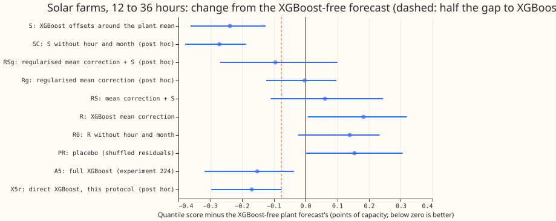
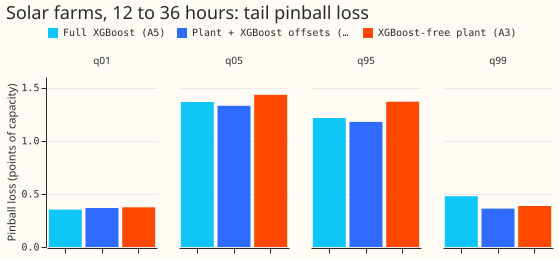
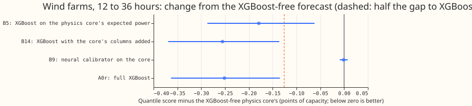

Can small XGBoost components inside the XGBoost-free solar and wind forecasts close the gap to a full XGBoost forecast?
Take-home. For solar farms, XGBoost helps most when it predicts the spread around the mean forecast of a physics-based solar plant model (a model that turns weather forecasts into farm output). The solar forecast with XGBoost spread scores 4.3% better than the plant model alone and 1.6% better than full XGBoost on the quantile score (lower is better; defined below), for forecasts made 12 to 36 hours ahead. It also scores 0.361 against full XGBoost's 0.478 in pinball loss at the 0.99 quantile (the 99th-percentile, high-output forecast), which is the tail that matters for curtailment, when generation is switched off. Correcting the plant model's mean with XGBoost made the quantile score worse, by about as much as a placebo model trained on shuffled residuals, so the placebo test fails. For wind, an XGBoost stage on the physics-based wind model (from experiment 230) closes 71% of the gap to full XGBoost at 12 to 36 hours. The gap is the difference between the XGBoost-free forecast and full XGBoost.
Experiment 234 found that forecasts with no XGBoost (a gradient-boosted decision-tree model, which production uses today), score 2.8% worse for metered solar farms and 5.0% worse for metered wind farms at 12 to 36 hours ahead. We asked whether adding a small XGBoost model inside the XGBoost-free forecast closes at least half of that gap. For solar we fitted three small XGBoost models on top of the plant forecast of experiment 224: one corrects the plant's mean (R), one predicts the spread, meaning 11 quantile offsets added to the plant's mean (S), and one does both (RS). For wind we scored the three small models that experiment 230 already built on the wind physics model (two XGBoost models and one neural network), without refitting them. Each score uses forecasts made 12 to 36 hours ahead, on half-hourly forecast targets. The quantile score is twice the mean pinball loss over 11 quantile levels, in percentage points of the farm's capacity. Intervals come from resampling whole months and the three random seeds, at the 98.3% level (a 95% interval widened for three comparisons). A negative difference means the first arm is better. The scored year is 2025-09-01 to 2026-08-31 and the replicate half-year is 2025-03-01 to 2025-08-31.



Results
- No arm is kept under the rule as written. An arm that adds an XGBoost model is kept when it closes half the gap to full XGBoost and the placebo scores within 0.01 of the plant alone. Solar S closes more than half the gap (change -0.238 against the needed -0.076, upper interval end -0.125). The placebo PR scored +0.154, so by the rule as written nothing is kept. PR is the placebo of the mean-correction arm, and S has no placebo of its own. Wind B5 closes more than half the gap (-0.179 against -0.126, the threshold recomputed from the corrected gap of 0.251; the plan quoted -0.121 from a gap of 0.242), and no wind placebo was run.
- Solar beats the plant alone at 12 to 36 hours (scored year, 41,676 half-hourly forecast targets
at six farms, quantile score).
- Plant alone (A3) 5.598; full XGBoost (A5) 5.446; the plant re-run in this code (A3r) 5.598.
- S 5.360, which is -0.238 from A3 (98.3% interval -0.362 to -0.125) and -0.086 from A5 (-0.165 to +0.004). S beats A3 at 5 of 6 farms.
- R 5.780 (+0.182, +0.007 to +0.319); RS 5.659 (+0.061, -0.110 to +0.245); R0 (R without hour and month) 5.737 (+0.139); PR (placebo) 5.752 (+0.154, +0.002 to +0.306).
- Replicate half-year (26,600 rows): S is -0.435 from A3 (-0.658 to -0.179) and -0.720 from A5 (-1.100 to -0.332), because A5 scores 6.700 there against A3's 6.415.
- Post hoc arms, run after the first scores were read. These arms test why R and the placebo
lost and why S won; the verdict does not depend on them.
- A regularised mean correction (depth 2, at least 300 rows per leaf, 100 rounds at rate 0.05) Rg scores 5.595 (-0.003 from A3, -0.124 to +0.097), and its placebo PRg +0.043 (-0.072 to +0.163). The default XGBoost settings overfit the noisy residual.
- RSg 5.503 (-0.095, -0.269 to +0.101): no better than S.
- SQ (S without the plant's error 48 hours earlier) is 0.025 worse than S (+0.001 to +0.057). SC (S without hour and month) scores 5.327, which is 0.033 better than S (-0.079 to -0.003) and 0.119 below A5.
- X5r (direct XGBoost on experiment 224's arm-5 inputs, under this protocol) scores 5.429, -0.017 from A5 (-0.063 to +0.035). S is -0.069 from X5r (-0.118 to -0.010), so using the plant mean as the centre improves the score by about 0.07 points.
- Solar tails, 12 to 36 hours (pinball loss / coverage), A3, A5, S. q01 0.374 / 0.032, 0.352 / 0.034, 0.367 / 0.033; q05 1.433 / 0.055, 1.365 / 0.068, 1.329 / 0.066; q95 1.367 / 0.963, 1.214 / 0.956, 1.177 / 0.946; q99 0.386 / 0.991, 0.478 / 0.996, 0.361 / 0.990. MAE of the median 9.918, 9.810, 9.732.
- Wind, 12 to 36 hours (22,788 half-hourly forecast targets at three farms, with the three seeds
of experiment 230's XGBoost arms). Physics model alone (B1) scores 5.112 and full XGBoost
(A0r) 4.861, a gap of 0.251.
- B5 (XGBoost starting from the physics model's expected power, with 11 quantile outputs) scores 4.933. That is -0.179 from B1 (-0.287 to -0.062), 71% of the gap, and +0.072 from A0r (+0.049 to +0.099).
- B14 (A0r with the physics model's outputs added as inputs) scores 4.857, -0.255 from B1 and -0.004 from A0r, so it is full XGBoost with extra inputs.
- B9 (a small neural network that calibrates the physics model) scores 5.111, no change.
- Over all leads (321,363 targets) the gap is 0.077. B5 is -0.034 from B1 (-0.073 to +0.011), 44% of the gap and not separable from zero.
- Wind source and revision. Experiment 230 corrected its spread step. The wind arms are its stored forecasts after that correction, read before experiment 230 merged, so the numbers are provisional. With the corrected spread the 12 to 36 hour gap is 5.2% (5.112 against 4.861); experiment 234 quoted 5.0% from the earlier spread.
- Schedule and settings. Solar: XGBoost with three seeds,
colsample_bytree1.0, trained once on all ensemble months before the fold start (no weekly refits), 12 to 36 hour rows only. The plant scale, ceiling, and offset factors come from tuning months only. The ensemble members are the only weather source (the European Centre for Medium-Range Weather Forecasts ensemble, available at forecast time).
Checks
- Median minus mean forecast per farm (points of capacity, 11-level mean). A3 +0.27 to +0.48, A5 -0.48 to +0.02, S -0.12 to +0.83. None exceeds 1 point.
- Mean absolute error (MAE) of the median beside the quantile score. The MAE of the median moves with the quantile score for S (-0.186 from A3, -0.402 to -0.000), SQ, SC, and X5r, and for R (+0.324).
- Audit triggers and audit. Two triggers fired: the placebo PR scored 0.154 points worse than the plant alone where the rule required at most 0.01, and PR's loss is about as large as R's. A fresh Sonnet agent audited the result (the brief for this experiment excludes Opus). It re-derived S minus A3 (-0.238, 95% interval from its own month resampling -0.337 to -0.144), S minus A5 (-0.086, -0.149 to -0.014), R minus A3 (+0.182), and PR minus A3 (+0.154) from the stored predictions, and found no leakage, no misaligned rows, and no effect of the zero floor. It explained the R and PR losses as a bias, not a width problem: the median forecast of R and PR sits below the actuals (0.469 and 0.450 of actuals at or below it, against 0.49 for the plant alone) because the mean residual changes between the tuning months (2024-04 to 2025-08) and the scored year. PR keeps each month-and-hour mean residual by construction, so it is not a clean noise control. We also tested the over-flexible-model explanation: regularising removes most of the loss (PRg +0.043).
- Leave one farm out. S has a lower quantile score than A3 at 5 of 6 farms in the scored year and 5 of 6 in the replicate (farm A is the exception), and S minus A3 keeps its sign when any one farm is left out. S minus A5 is fragile: it shrinks by about 40% without farm A and is near zero at two farms, so the lead over full XGBoost is a small gain.
Caveats and what to try next
- One fold and one weather source per type. The solar result rests on one scored year and one replicate half-year at six farms. S has no seed-to-seed variation beyond the three seeds.
- S has the plant's error 48 hours earlier as an input, which full XGBoost (A5) lacks. SQ shows that input is worth 0.025 points, so that input does not explain S's 0.086-point lead over A5.
- Nested out-of-fold residuals are second-order leaky at month boundaries. The error 48 hours earlier of a training row can include a held-out target at the edge of a block of months.
- Wind placebo and the all-leads band were not part of the solar-style check. Wind uses experiment 230's own training, which differs from this experiment's protocol.
- Next: port S's idea to the wind physics model under this experiment's protocol (plant mean as the centre, an offsets model without the hour and month, and a regularised mean correction as an ablation), and test S on the 60 to 84 and 108 to 132 hour bands.
The code is in ml-experiments/00240-no-xgboost-forecast-sprinkle-part-2/.